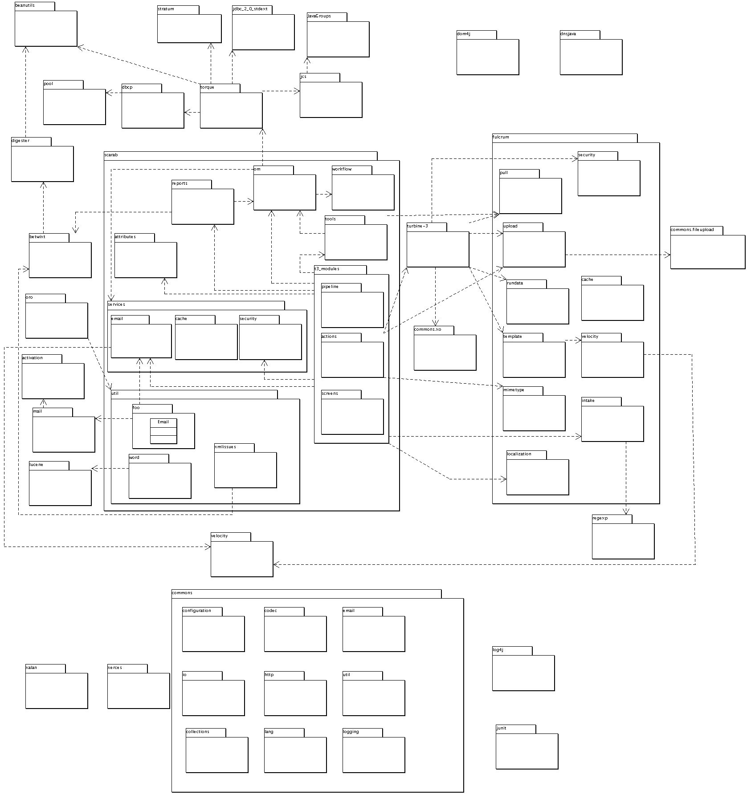

Last Updated: $Date: 2003/05/28 20:16:02 $
This package dependency graph is a braindump of one of the developers and may miss or incorrectly state some dependencies. It does offer some insight into the relationships between scarab components and all the jars in the lib directory. This graph was created using ArgoUML v0.12 and the source lives in src/uml.
